The BeefTech app lets field teams record livestock and farm information on an Android phone, even where there is no signal. Records are kept safely on the phone and sent to the BeefTech server as soon as the phone is online.
With the app you can:
Register calves with their ear tag, breed, birth details, condition and parents.
Register farmers (clients), their address, farm details and GPS location.
Trace animals: movements, supplier and purchase details, location and feed, treatments, costs, weighings and deaths.
Link animals to farmers so each farmer's herd is known.
Manage the operation (managers and admins): dashboards, reports, record review, team, phones, sites and system settings.
Roles and what each one sees
Every person signs in with their own username and 5-digit PIN. What they can do depends on their role. Higher roles can do everything the lower roles can.
Field agent
Worker
Captures calves, farmers and traceability records. Sees their own sync status and activity.
Site manager
Manager
Everything a worker can do, plus Dashboard, Reports, Records and Team for their own site.
System owner
Admin
Everything a manager can do across all sites, plus the Admin area: sites, phones, security, reference data and sync policy.
NoteOn the phone the app may still be labelled demoapp in the app drawer. It is the BeefTech app.
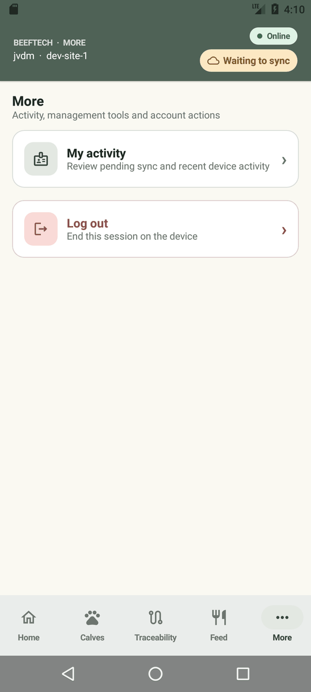
More menu — Worker
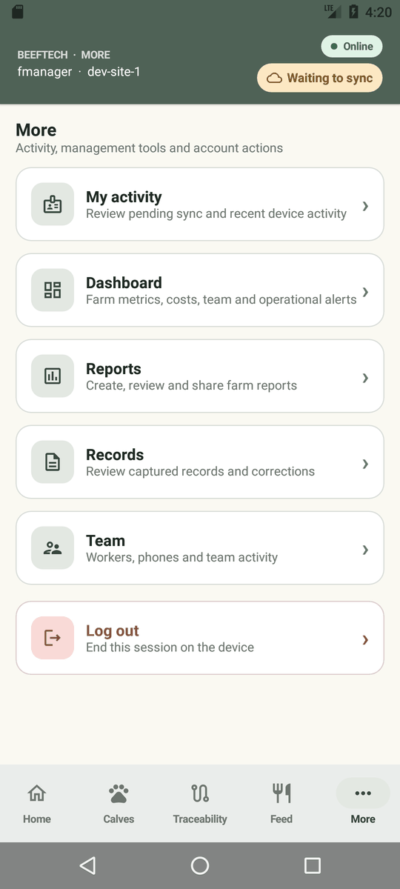
More menu — Manager
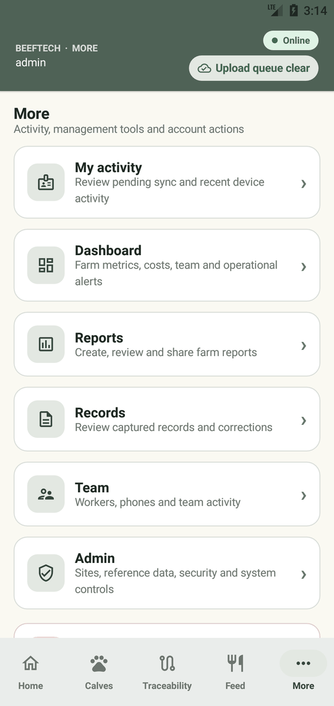
More menu — Admin
Finding your way around
After signing in, the bar at the bottom of the screen has five tabs. They are the same for every role:
Tab
What it is for
Home
Welcome, quick actions (Register calf, Traceability, Feed; Dashboard and Reports for managers) and the Sync card.
Calves
Register a calf or look up calves registered on this phone.
Traceability
Farmers, animal assignment and every per-animal record: movements, supplier, location & feed, treatments, costs and mortality.
Feed
Feed crib readings — a preview only, see Feed tab.
More
My activity and Log out. Managers and admins also find their management tools here.
The green header at the top of every screen shows where you are (for example BEEFTECH · CALVES), who is signed in and on which site, whether the phone is Online or Offline, and the upload status pill (see Reading the sync status).
How to read this manual
Buttons and labels you tap appear like this: Save calf.
Fields marked with * in the app are required. The app will not save until they are filled in.
The screenshots were taken with sample data on a test system. Your names, sites and numbers will differ.
Chapter 2 · EveryoneGetting started
Signing in
Open the BeefTech app.
Type your Username.
Type your 5-digit PIN. The Sign In button only becomes active once both are filled in.
Tap Sign In.
First time on a phoneThe very first time you sign in on a phone it must be online. Your account is then linked to that phone, and from then on you can also sign in without signal.
If you type the wrong PIN five times in a row, the phone blocks sign-in for 1 minute. If this happens while online, the server also locks your account for 5 minutes. A manager can unlock it sooner from Team.
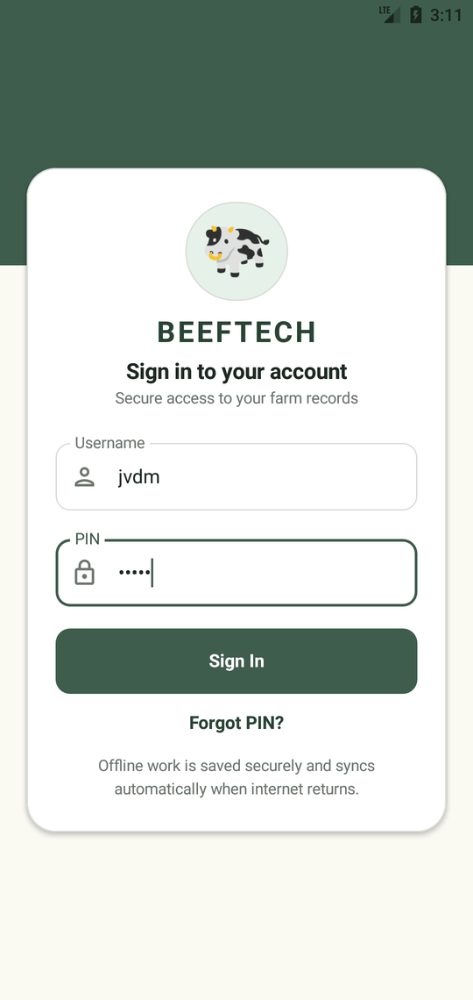
Sign-in screen
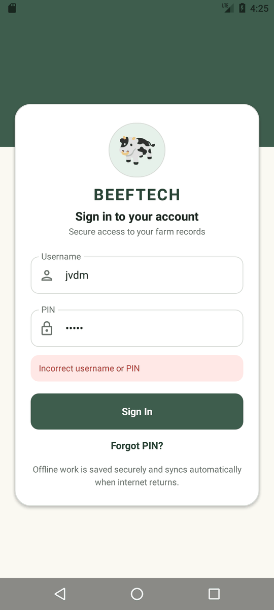
Wrong username or PIN
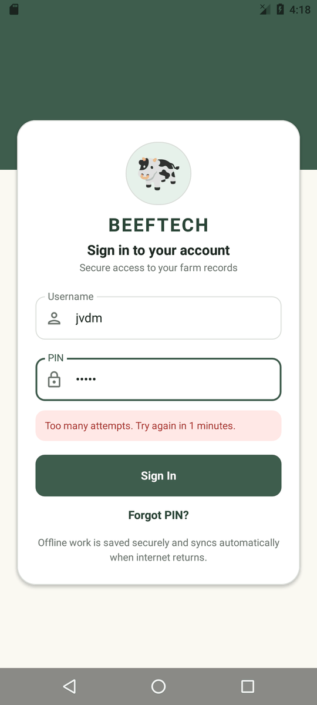
After five wrong PINs
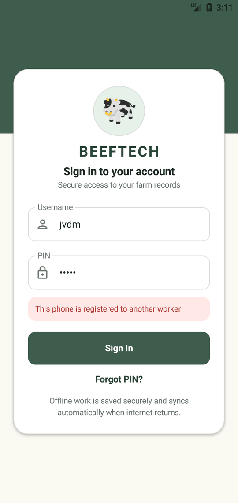
Account linked to another phone
Forgot your PIN
Tap Forgot PIN? on the sign-in screen. You cannot reset a PIN yourself. Ask your manager or administrator to give you a new one (see Team → Reset PIN).
Records already saved on the phone are not lost when your PIN is reset.
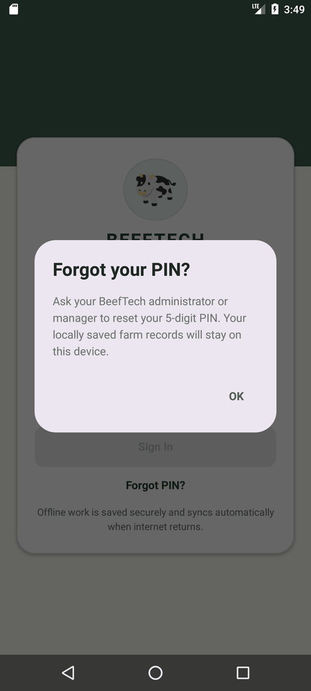
Forgot PIN
Signing in without signal
Once you have signed in online on a phone, you can sign in on that phone with no signal. The app checks your PIN against a secure copy kept on the phone.
An offline session lasts up to 7 days. After that, connect and sign in online again.
Everything you capture offline is saved on the phone and sent later.
The header shows Offline and Sync paused while there is no connection.
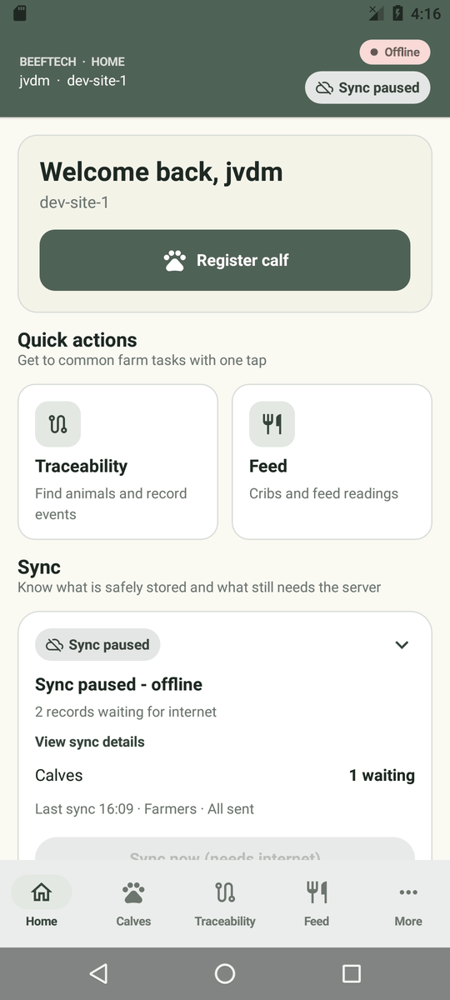
Signed in while offline
The Home screen
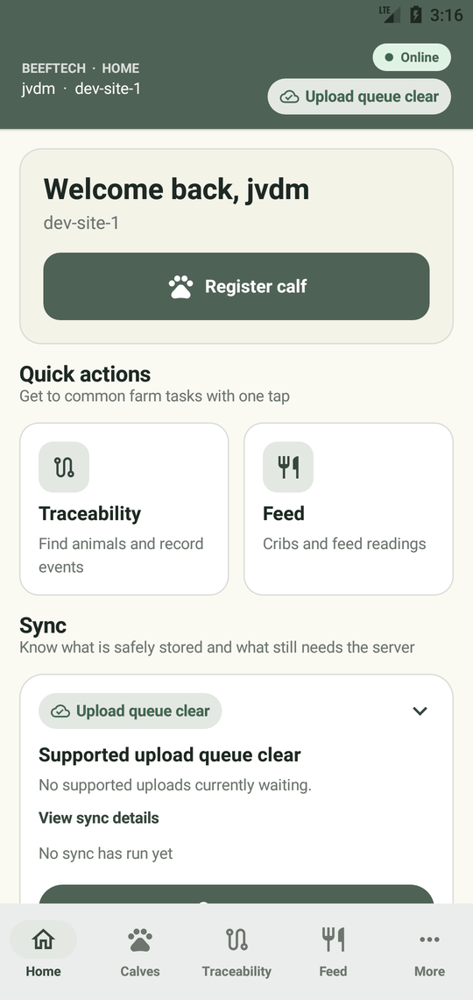
Home — Worker
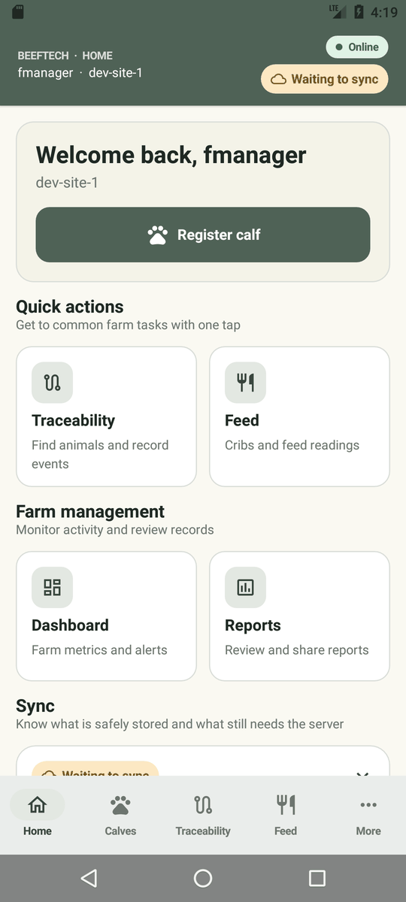
Home — Manager, with Farm management tiles
Welcome back shows your username and site.
Register calf starts a calf registration straight away.
Quick actions open Traceability and Feed. Managers and admins also get Farm management tiles for Dashboard and Reports.
The Sync card tells you what is safely stored on the server and what is still waiting (see Chapter 3).
Logging out
Go to More → Log out and confirm with Log out. You will need your username and PIN to sign in again.
Log out when you hand the phone to someone else, so their records are captured under their own name.
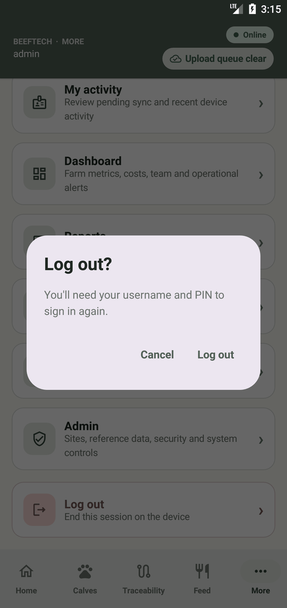
Log out confirmation
Chapter 3 · EveryoneWorking offline and syncing
How saving works
Every record is saved on the phone first, then sent to the server. You never need signal to capture data, but you do need signal for the data to reach the office.
You tap Save. The record is stored, encrypted, on the phone and marked PENDING.
When the phone has a connection, the app uploads waiting records in the background.
When the server confirms it received a record, the record becomes SYNCED.
If the server refuses a record (for example the ear tag is already registered), it is marked NEEDS ATTENTION and the reason is shown on the record.
Reading the sync status
The pill in the header and the Sync card on Home always show the current state:
Status
Meaning
Upload queue clear
Everything captured on this phone has been sent.
Waiting to sync
Records are queued and will be sent shortly, or the server has not yet confirmed them.
Sync paused
The phone is offline. The card shows how many records are waiting for internet.
Needs attention
One or more records could not be sent. Open the record to see why and use Retry sync once fixed.
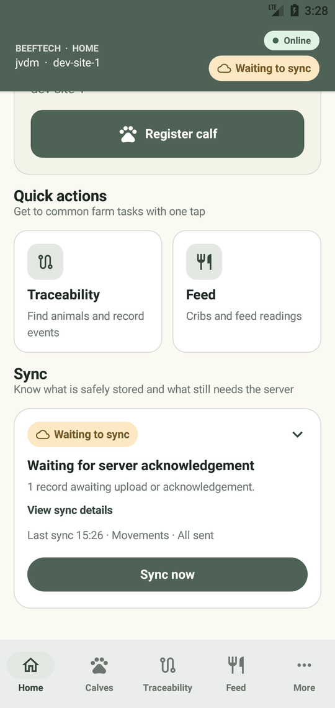
Online, waiting for the server
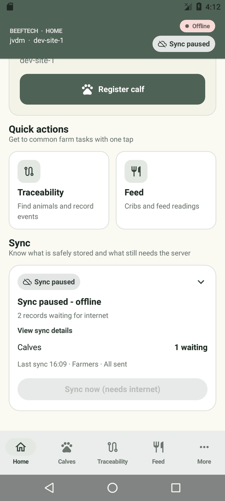
Offline: records waiting per module
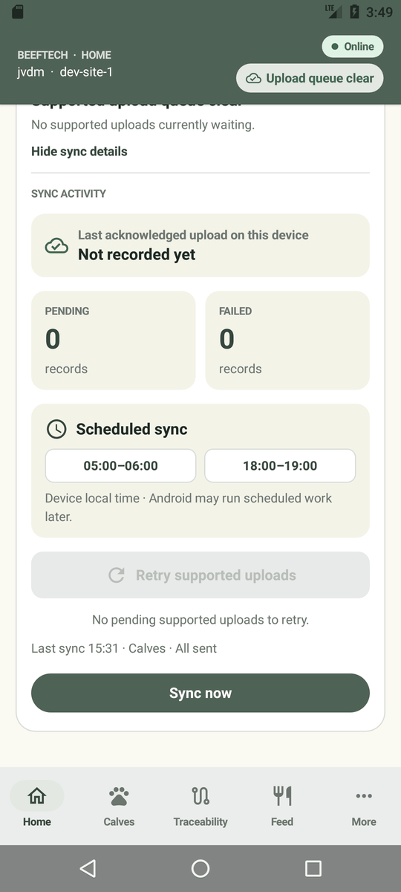
View sync details
Tap View sync details on the Sync card to see the numbers of PENDING and FAILED records, the time of the last upload the server confirmed, and the scheduled sync windows.
Sync now and scheduled sync
Automatic: waiting records upload by themselves as soon as the phone has a connection.
Scheduled: the app also runs a full sync every day between 05:00–06:00 and 18:00–19:00 (phone time). Android may run it a little later to save battery.
Sync now: tap Sync now on the Home Sync card to send everything immediately. You will see Sync started. While offline the button reads Sync now (needs internet).
Retry supported uploads (in sync details) tries again for records that failed.
Good habitBefore leaving a farm or at the end of the day, find signal and tap Sync now. Wait until the pill shows Upload queue clear.
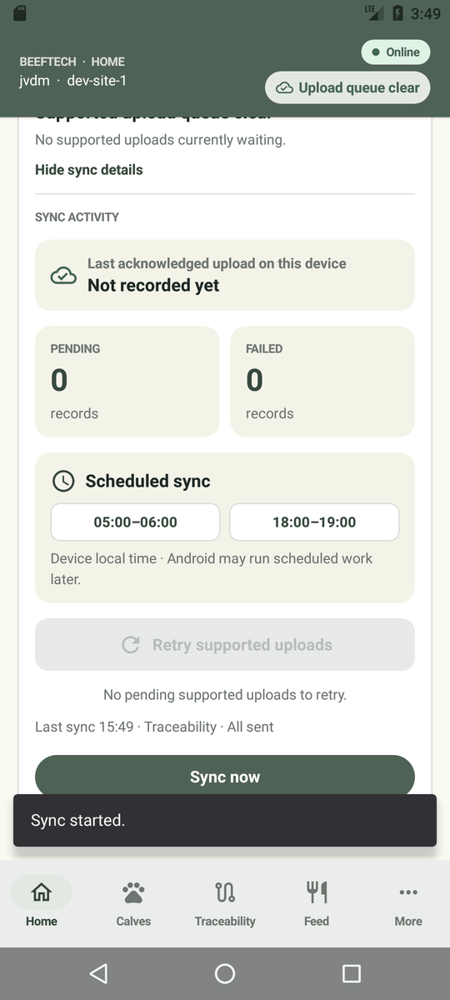
Sync started
Sync history
More → My activity shows your account, site, how many records are still waiting, and a Sync history of the last 30 days.
Each entry shows the module (Calves, Farmers, Traceability, …), what started it — Morning sync, Evening sync, Sync now or Automatic — the time, and a summary such as 3 sent, 1 waiting with All sent, Partly sent, Failed or Offline.
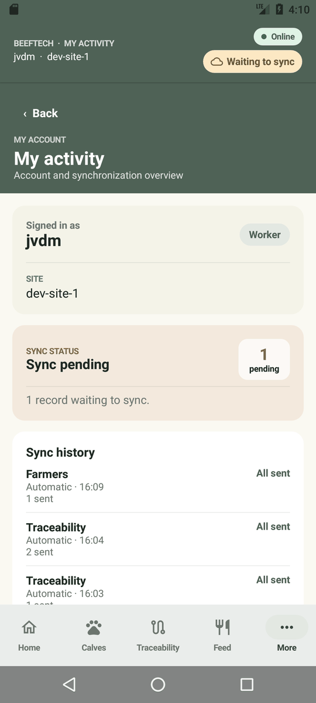
My activity
The 7-day rule
To protect the data, the app does not let records sit unsynced on a phone forever. Counting from the oldest unsynced record:
Day (default)
What you see
What to do
Day 2
Data Not Synced
Connect to a network and sync your records.
Day 4
Critical Sync Warning
Connect and sync as soon as possible.
Day 6
Final Sync Warning
Connect and sync today.
Day 7
Account locked
The unsynced records are deleted from the phone and the account is locked until an administrator restores access.
ImportantOn day 7, records that were never sent are permanently deleted from the phone. Do not ignore the warning banners. The administrator can move the warning days (see Sync policy) but day 7 is fixed.
Chapter 4 · WorkersField agent guide
This chapter covers the day-to-day capture work: calves, farmers and the traceability records for each animal.
Registering a calf
Open the Calves tab and tap Register a calf, or tap Register calf on Home. Registration has four steps; the bar at the top shows where you are, and the back arrow returns to the previous step without losing what you typed.
Step 1 — Ear tag
Choose the tag colour: Blue, Red, Green or Yellow.
Type the number printed on the tag, for example 64. The app builds the full tag ID — Blue 64 becomes Blu0000064.
Watch the line below the field: “Blu0000064 is free to use” means you can continue; if the tag is already registered the app tells you.
Or tap Scan ear tag instead to read the tag with the camera (see Scanning an ear tag).
Optionally fill in Other identifiers: old tag number and reference number.
Tap Next: calf details.
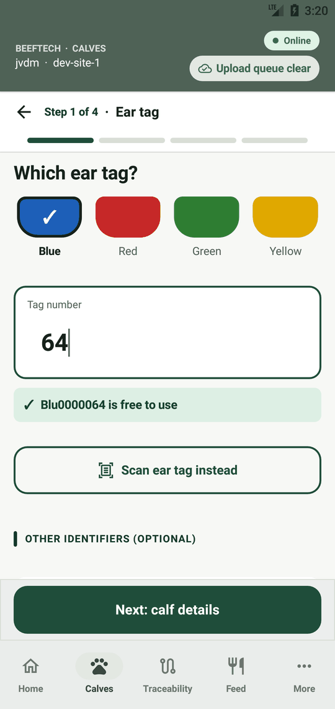
Step 1 — Ear tag
Step 2 — Calf details
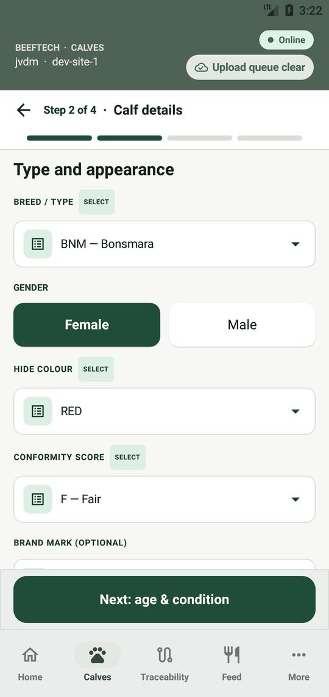
Type and appearance
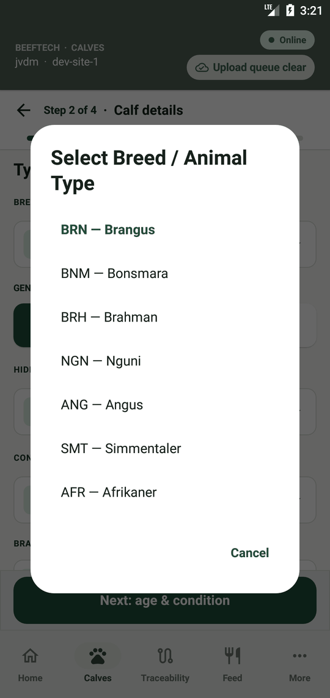
Breed list
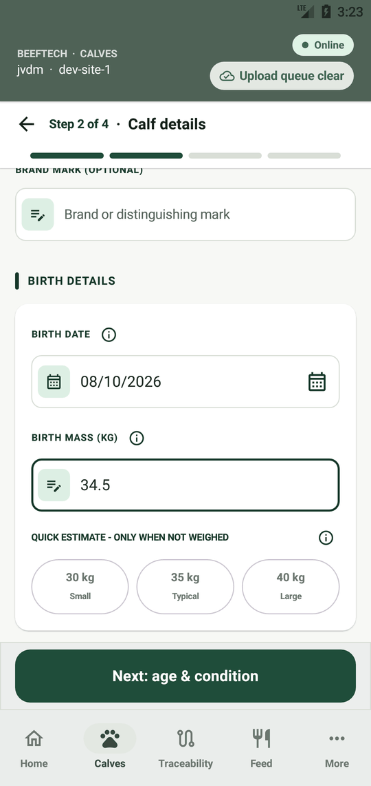
Birth details
Breed / type: BRN Brangus, BNM Bonsmara, BRH Brahman, NGN Nguni, ANG Angus, SMT Simmentaler or AFR Afrikaner.
Gender: Female or Male.
Hide colour and conformity score: choose from the lists.
Brand mark (optional): any brand or distinguishing mark.
Birth date: tap the calendar icon and pick the date.
Birth mass (kg): the weighed mass. If the calf was not weighed, tap a quick estimate — 30 kg small, 35 kg typical or 40 kg large.
Tap Next: age & condition.
Step 3 — Age, health and parentage
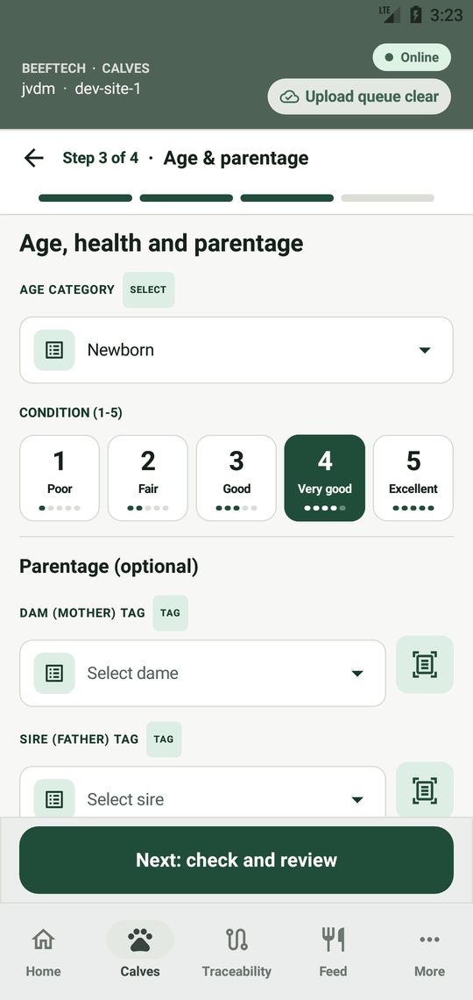
Age and condition
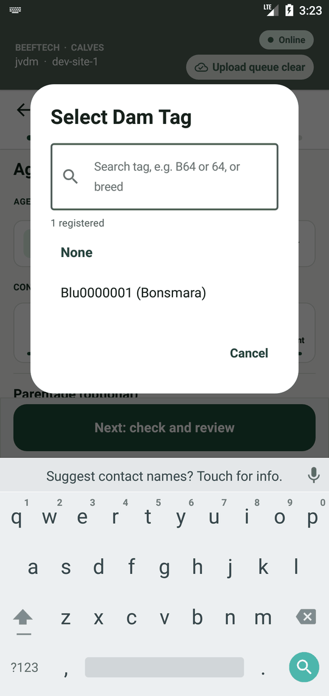
Choosing the dam
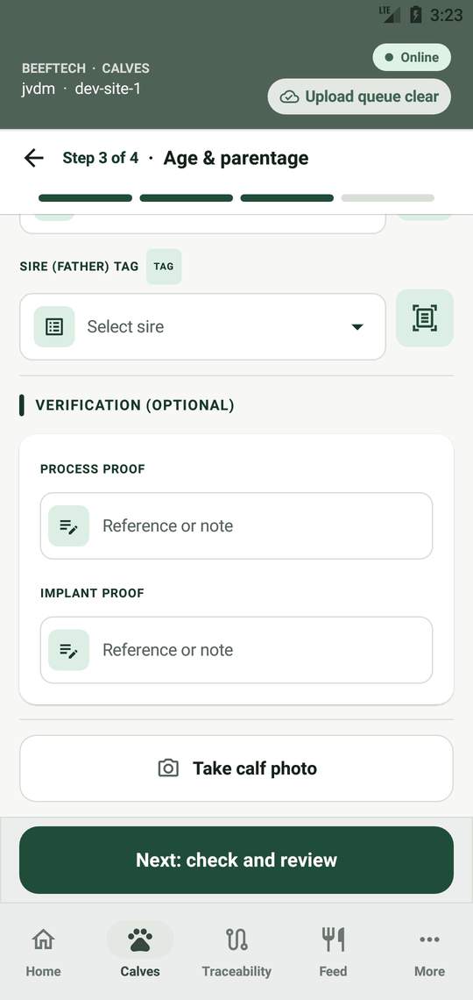
Verification and photo
Age category: Newborn, < 1 week, 1–2 weeks or > 2 weeks.
Condition (1–5): 1 Poor, 2 Fair, 3 Good (default), 4 Very good, 5 Excellent.
Parentage (optional): tap the dam (mother) or sire (father) field and search for a registered animal by tag (e.g. B64) or breed, or tap the scan button beside the field to scan the parent's tag.
Verification (optional): process proof and implant proof references.
Take calf photo (optional) opens the camera.
Tap Next: check and review.
Step 4 — Review and save
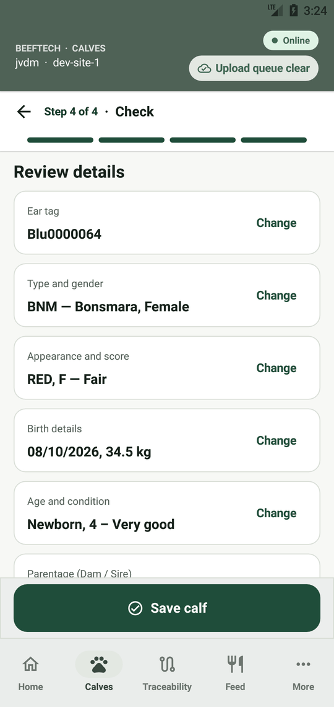
Review details
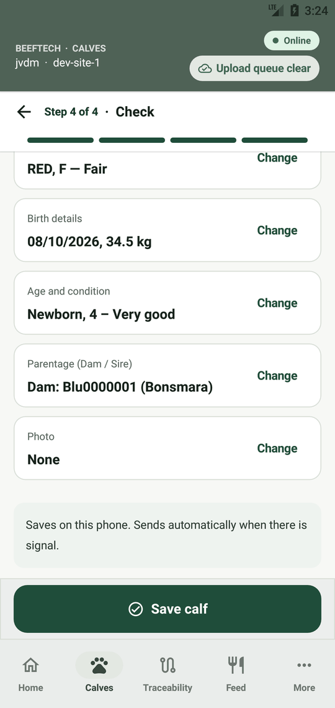
Save calf
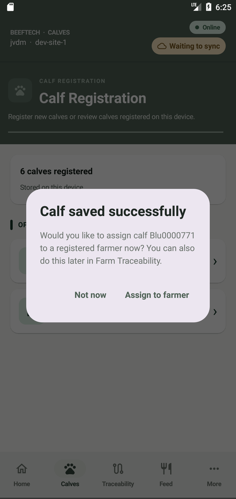
Saved — assign to a farmer?
Check every section. Tap Change next to anything that is wrong to jump back to that step.
Tap Save calf. The calf is saved on the phone and will be sent when there is signal.
The app asks whether to assign the calf to a farmer now. Tap Assign to farmer (see Assigning animals) or Not now.
Registered calves
On the Calves tab tap View registered calves. The summary shows how many calves are registered on this phone and how many are synced, pending or need attention.
Search shortcuts: type the first letter of the colour and the number — B64 finds Blu0000064, R123 finds Red0000123. G is Green and Y is Yellow.
Each calf shows its status: SYNCED, PENDING or NEEDS ATTENTION. Tap a calf to see all its details (read-only).
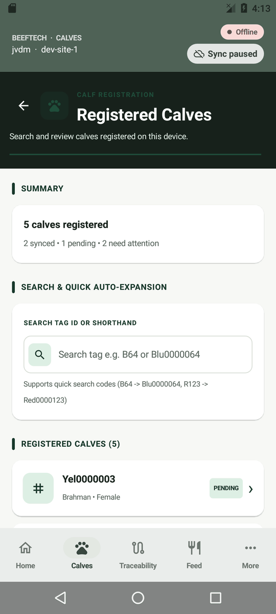
Registered calves
When a calf needs attention
Open the calf. At the bottom, Sync status reads Rejected by the server and Server message gives the reason. The most common reason is that the ear tag is already registered on the server.
If the tag was mistyped, register the calf again with the correct tag, and ask your manager to void the wrong record.
If the problem was temporary, tap Retry sync.
NoteThe server message can be technical. Text containing UNIQUE constraint … tag_number means the tag number already exists.
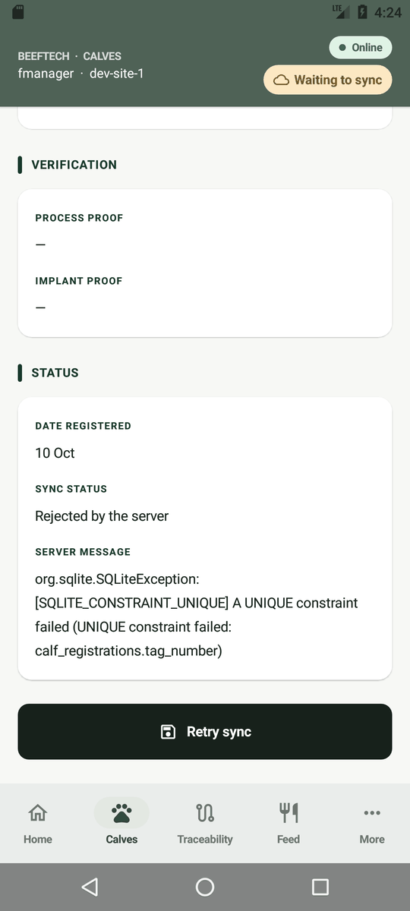
Rejected calf with Retry sync
Scanning an ear tag
Wherever you see Scan ear tag (calf step 1, the dam and sire fields, and Find Animal):
Allow camera access the first time the app asks.
Hold the phone so the tag number fills the frame. Use the torch button in poor light.
The app reads the number and the tag colour. If it cannot tell the colour, it asks you to tap it.
Tap Use this tag, or Rescan to try again.
If camera access was refused, choose Enter manually and type the number instead.
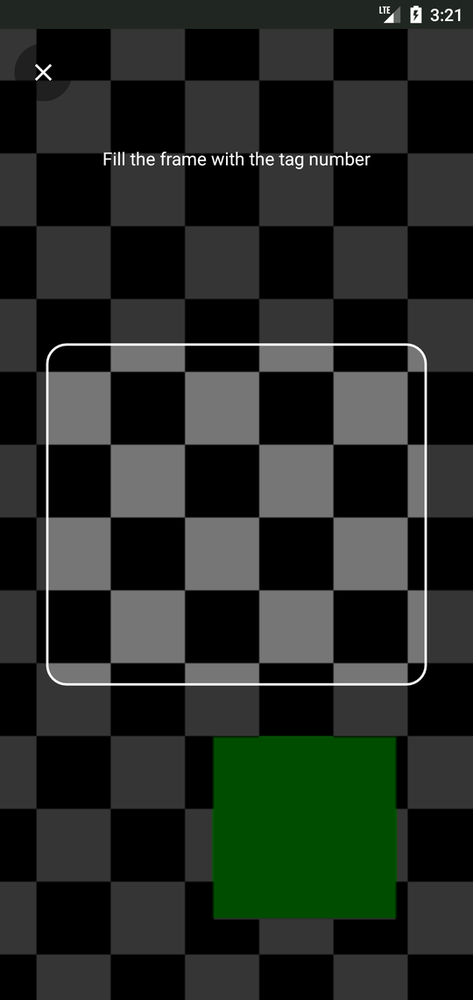
Scanner (emulator camera shown)
Registering a farmer
Go to Traceability → Farmer Registration. The list shows farmers registered on this phone with their status: Pending Sync, Processing or Registered. Tap Register farmer to add one. There are three screens.
1. Client Details
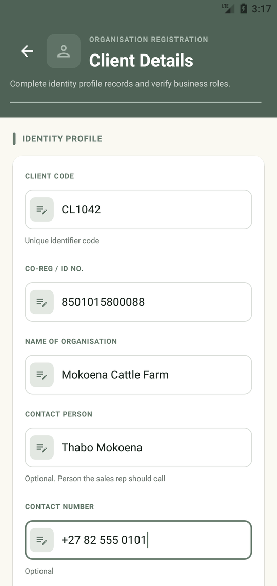
Identity profile
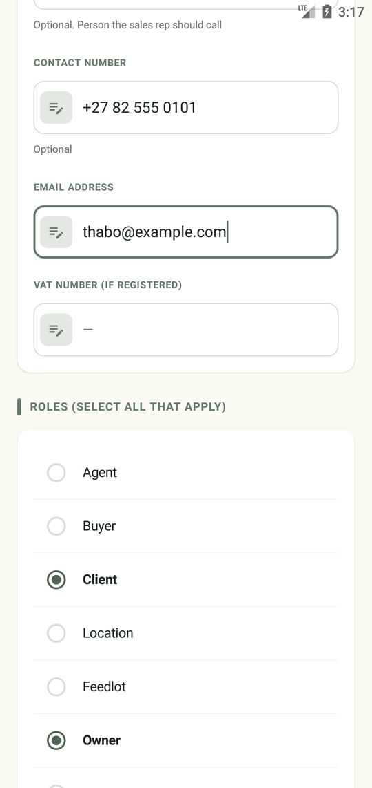
Email, VAT and roles
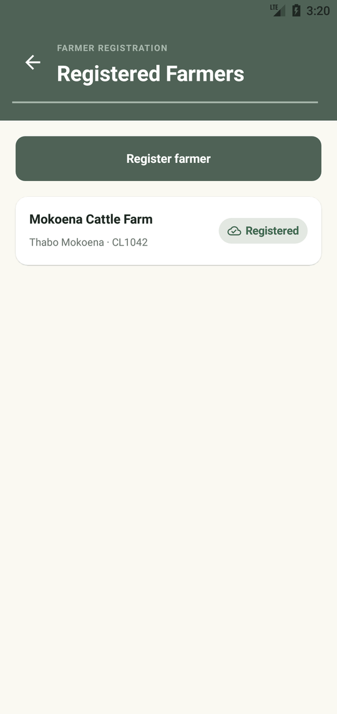
Saved farmer in the list
Field
Rules
Client code
Required and must be unique. The app warns “Client Code already exists!”.
Co-Reg / ID no., name of organisation
Company registration or ID number, and the business or farm name.
Contact person
Optional. The person the sales rep should call.
Contact number
Optional. Only +, digits and spaces, with 9 to 15 digits, e.g. +27 82 555 0101.
Email, VAT number
Optional.
Roles
Tick all that apply: Agent, Buyer, Client, Location, Feedlot, Owner, Supplier, Transporter.
Tap Continue, or Discard to abandon the registration.
2. Address & Location
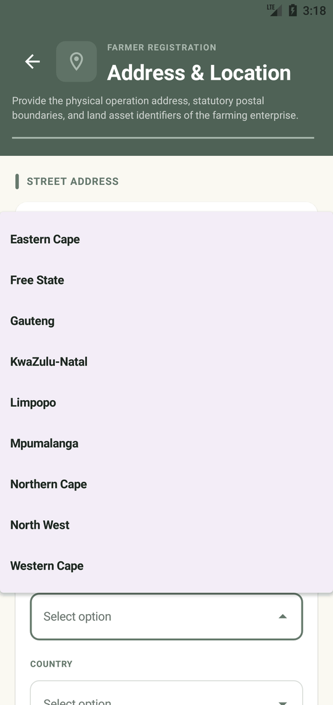
Province list
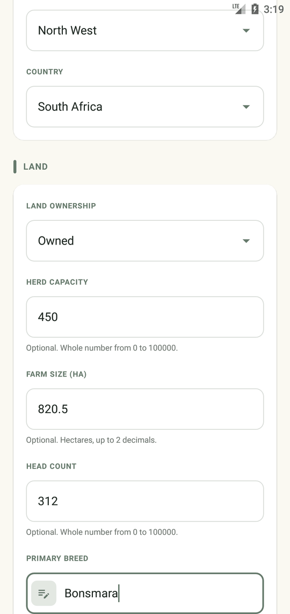
Land and herd
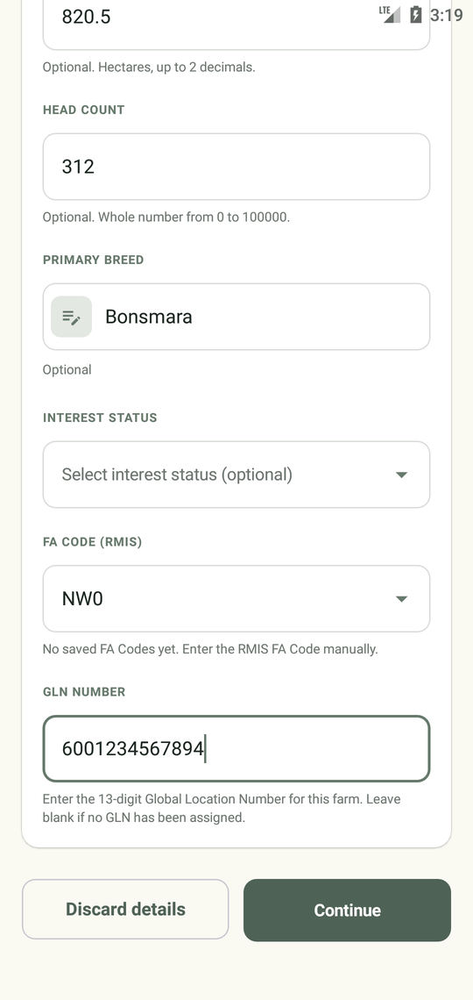
Interest, FA code and GLN
Street address, street code, postal code, postal address.
Province (the nine South African provinces) and Country (South Africa or a neighbouring country).
Land ownership: Owned, Leased, Communal, State-owned or Trust.
Herd capacity and Head count: whole numbers from 0 to 100 000 (optional).
Farm size (ha): up to 2 decimals (optional). Primary breed (optional).
Interest status: Interested, Follow-up needed, Not interested or Already a client (optional).
FA Code (RMIS): pick a saved code or type it. GLN number: the 13-digit Global Location Number, or leave blank.
3. Coordinates & Save
Stand at the farm and tap Use current location. Allow location access if asked. Or type the latitude (−90 to 90) and longitude (−180 to 180).
Tap View on map to check the position in your map app.
Check the summary card and tap Save Location Data.
The farmer is saved on the phone as Pending Sync and becomes Registered once the server has it. If the site has a sales rep, they are emailed about the new farmer.
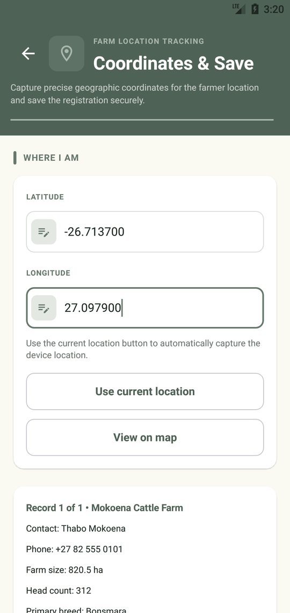
Coordinates & Save
Farm Traceability
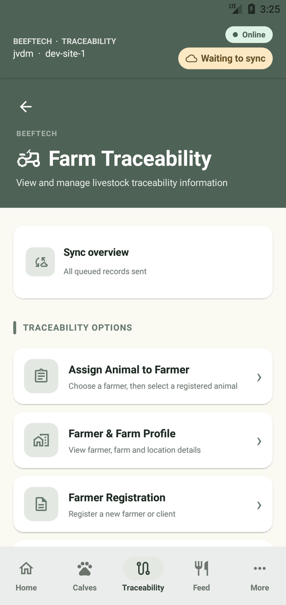
Sync overview and farmer options
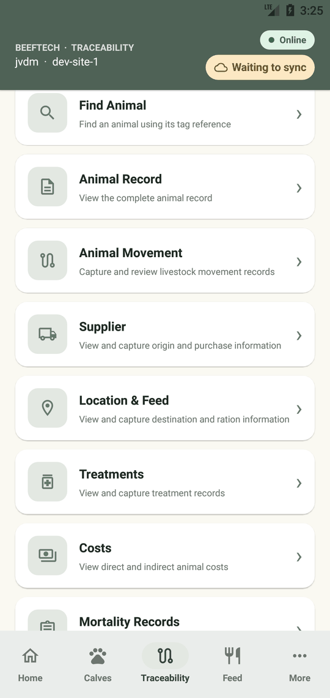
Per-animal options
The Traceability tab starts with a Sync overview (and the day 2/4/6 warning banners when they apply). Below are the options:
Animal options: Find Animal, Animal Record, Animal Movement, Supplier, Location & Feed, Treatments, Costs and Mortality Records.
Every animal option first opens Find Animal so you can pick the animal, then opens the form for that animal. The animal's tag is shown at the top of each form (e.g. ANIMAL GRN0000007).
Assigning animals to a farmer
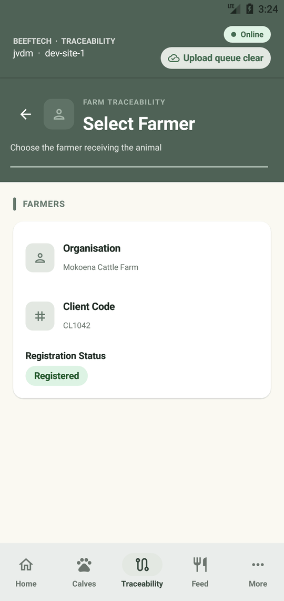
1. Select the farmer
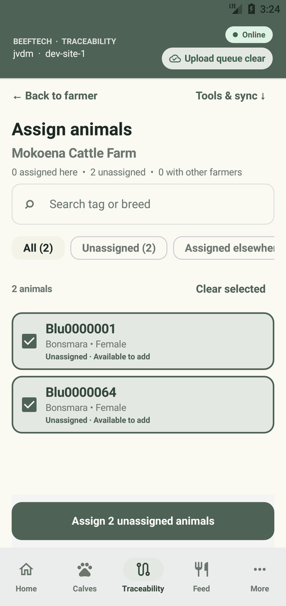
2. Tick the animals
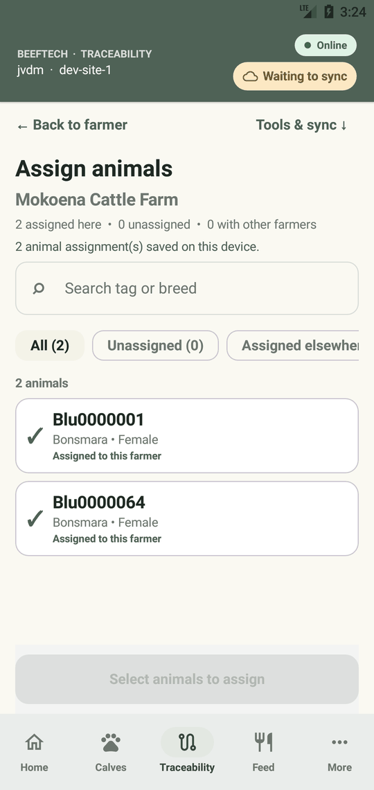
3. Assigned
Open Assign Animal to Farmer and tap the farmer receiving the animals.
Use the search box or the filters Unassigned, Assigned elsewhere and Assigned here to find animals, and tick them.
Tap Assign N unassigned animals. The assignments are saved on the phone and synced.
To take an animal over from another farmer, select it under Assigned elsewhere. The app asks Transfer {tag}? and ends the old assignment when you confirm.
Tools & sync
Tap Tools & sync at the top of the screen for:
Download farm animals for offline use — copies the site's animals to the phone before you go out of signal.
Check pending assignment issues — reports assignments that have not reached the server.
Farmer & Farm Profile
Shows a farmer's details, farm and the animals assigned to them, with buttons to Assign existing animals or Register new calf.
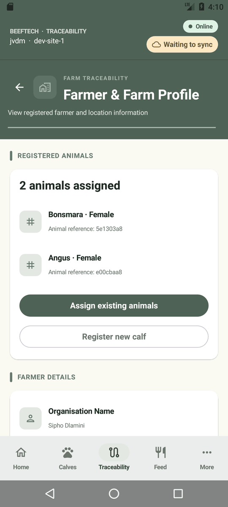
Farmer & Farm Profile
Find Animal and Animal Record
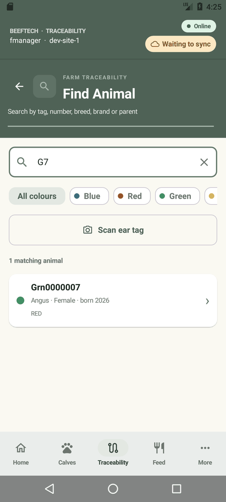
Find Animal with shortcut search
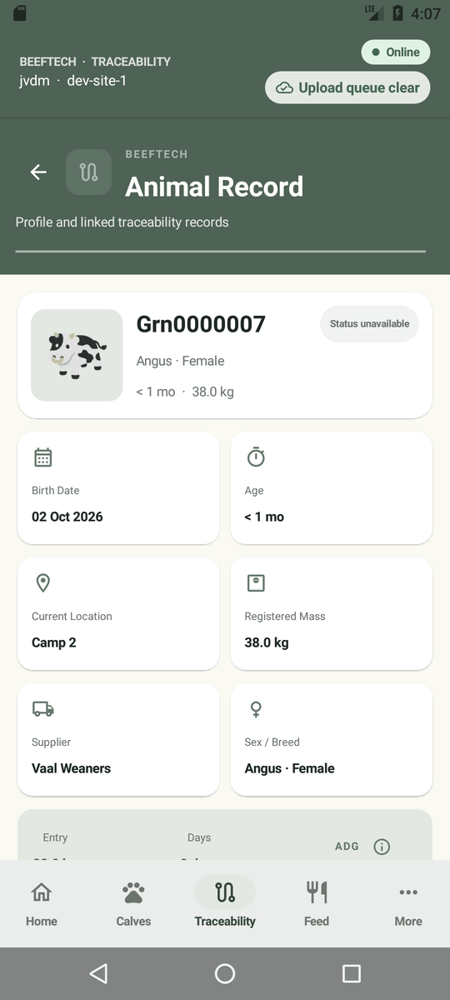
Animal Record
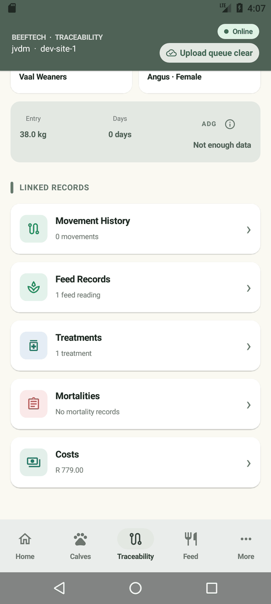
Linked records
Find Animal searches by tag, number, breed, brand or parent (e.g. B64, 64, Bonsmara). Filter by tag colour, or tap Scan ear tag.
Animal Record shows the animal's profile and status (for example Moved, Sold or Deceased), birth date, age, current location, registered mass, supplier, entry mass and ADG (average daily gain). Under Linked records you can open its movements, feed records, treatments, mortalities and costs.
Recording a weighing
On the Animal Record, tap Registered Mass.
Choose New weighing to add a weighing, or Correct birth mass to fix the registered birth mass.
Enter the mass in kg (must be more than 0), the date and an optional note, then tap Save.
The Mass history list shows all earlier weighings. ADG is calculated once there are at least two masses on different dates.
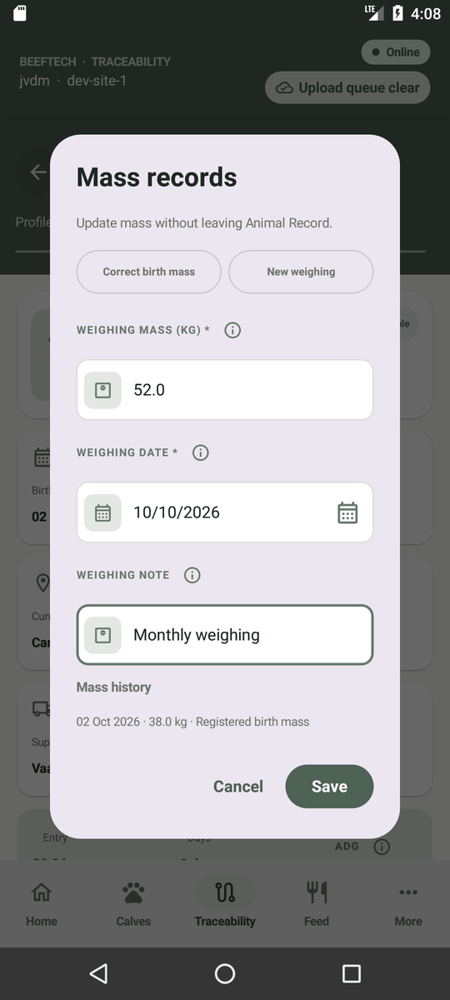
Mass records
Animal Movement
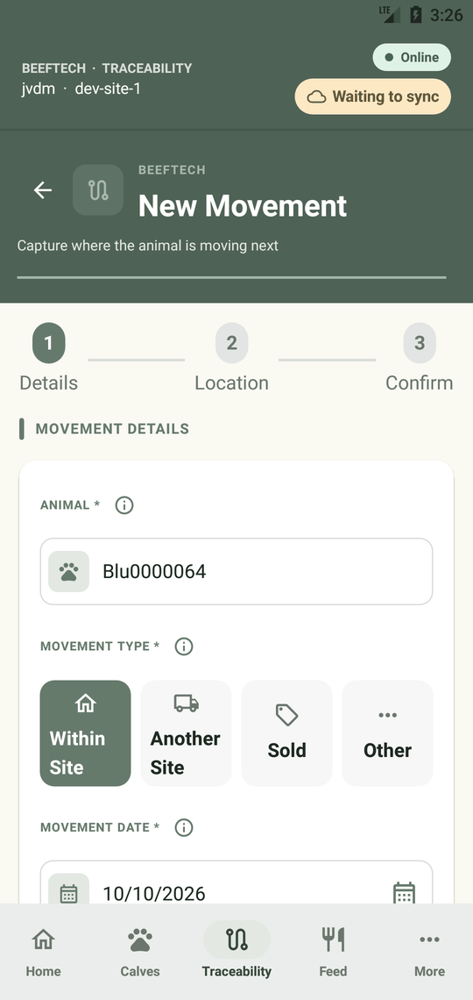
Movement type and date
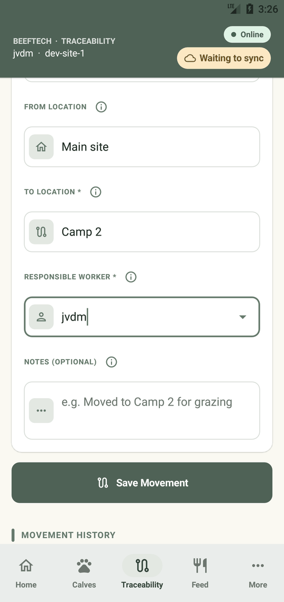
Locations and responsible worker
Movement type *: Within Site, Another Site, Sold or Other.
Movement date *, From location and To location * (pick or type).
Responsible worker * and optional Notes.
Tap Save Movement. The app will not save a movement to the place the animal already is. Past movements are listed under Movement history.
Supplier
Records where a purchased animal came from.
Supplier name *: search registered suppliers or type a new one, then tap the Use “…” suggestion.
GLN number: exactly 13 digits, or leave blank.
Date of purchase *.
Purchase batch number: created automatically (PB-…) once a supplier is chosen.
The Batch overview shows head in the batch and average entry mass. Tap Save Supplier.
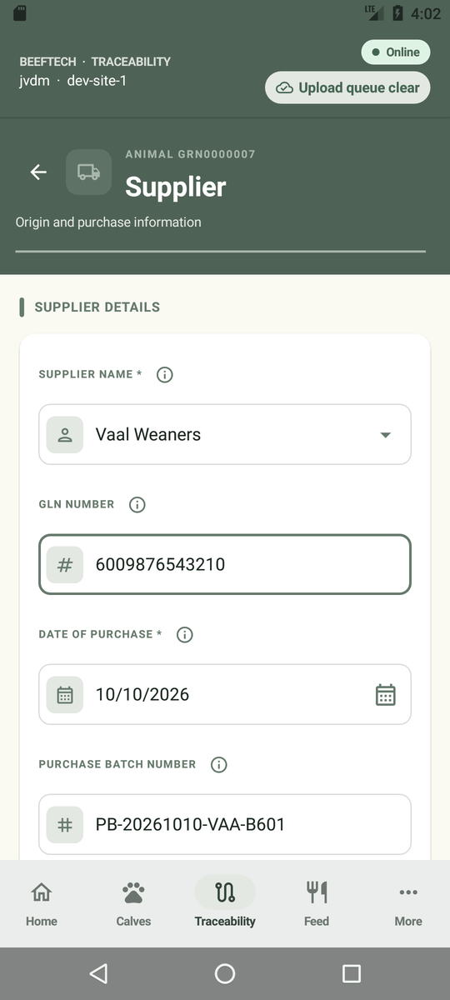
Supplier
Location & Feed
Destination * (pen or camp) and Days in destination.
Ration *, Days on that ration and Cost in rand.
Ration days cannot be more than the days at the destination.
Enter the real cost. Zero is accepted only if the feed really cost nothing.
Tap Save Location & Feed. The feed cost also appears in the animal's Costs.
Location & Feed
Treatments
Disease / conditionTreatment typeBatch, volume and cost
Disease / condition *: pick from the list or type a condition that is not listed.
Treatment type *: pick from the list (for example Antibiotic treatment, Vaccination, Deworming). Use Other if nothing fits.
The Batch number (TRT-…) is filled in automatically.
Enter the Volume used and the Cost in rand.
Tap Save Treatment. The app blocks an identical treatment from being saved twice.
Costs
Add CostTransport calculatorOverview: total cost
The Costs screen has two tabs:
Add Cost: choose the cost type — Transport, Processing, Handling or Interest — then enter the amount, an optional description and the date, and tap Save Cost.
Transport calculator: distance (km) × rate per km × number of trips ÷ animals sharing the trip, plus extra charges. Tap Calculate Transport Cost to fill in the amount.
Interest calculator: simple interest over a 365-day year.
Overview: direct costs (Transport, Processing, Treatment, Feed / Ration), indirect costs (Handling, Interest, Other), the total animal cost and cost per birth kg.
NoteTreatment and Feed costs are added automatically from the Treatments and Location & Feed screens. Do not enter them again here.
Mortality Records
Find the animal, then enter the Mortality reason * (e.g. illness, injury or unknown cause).
Enter the Responsible worker *.
Tap Save Mortality. The animal's status changes to Deceased.
Check firstMake sure you have the right animal before saving. A mortality can only be undone by a manager voiding the record.
Mortality Records
Feed tab (preview)
The Feed tab shows the planned feed crib screens: a list of pens and a reading screen per crib.
Preview onlyIn this version the Feed tab uses example data. Nothing entered here is saved or synced. Record feed against animals with Location & Feed instead.
Feed Crib (preview)
My activity
More → My activity shows who is signed in, the role and site, how many of your records are waiting, and your sync history. See Sync history.
Chapter 5 · ManagersSite manager guide
Managers see the tools below under More, for their own site. These screens read live data from the server, so they need a connection. When offline they show “… needs a connection. Check your signal and tap Refresh.”
NoteIf you are a manager and no site has been assigned to you, the Dashboard asks you to contact an administrator.
Dashboard
Farm overviewCosts and team statusAlerts
Operational snapshot: farmers, calf registrations, treatments, team, mortalities, movements, other costs and feed readings, with the number in the last 7 days.
Cost overview: treatment value and other recorded costs.
Team status: active and deactivated workers.
Alerts: for example a worker who has not connected for longer than the time set in Sync policy.
Tap Refresh dashboard for the latest figures. Admins can switch between sites or choose All sites.
Reports
Report types and optionsMortality reportCost per animal
Choose a report: Farm Summary, Animal History, Movement Report, Treatment Report or Mortality Report.
Under Report options choose the view (Mortality, Treatment cost, Cost per animal) and the period: Last 7, 30 or 90 days.
Tap Refresh to build the report.
Tap Share CSV (for Excel) or Share PDF to send it by email, WhatsApp, Drive and so on.
Mortality rate = mortalities ÷ calves registered in the same period and site.
Records and voiding
Animals tabCaptured RecordsVoid with a reason
Animals: every animal on the site, filtered by At Site, Moved, Sold or Deceased, with a search box.
Captured Records: records by type (Calves, Treatments, Farmers, Movements, …), showing who captured them and when.
Voiding a wrong record
Find the record under Captured Records and tap Void.
Type the Reason (required) and tap Void.
The record is kept but hidden from lists and reports, and the action is written to the audit log. The worker will need to capture the correct record again. Switch on Show voided to see voided records. Admins can also assign a record to a site (a reason is required).
Team
PeopleAdd workerNew PIN — shown once
Team has three sub-tabs: People, Phones and Activity. Managers see and manage the workers on their own site.
Action
What it does
Add worker
Create a worker with a username and a 5-digit PIN on your site. Give the worker the PIN in person.
Reset PIN
Immediately creates a new PIN and shows it once. Write it down and give it to the worker before tapping Done.
Unlock sign-in
Lifts the 5-minute lock after too many wrong PINs.
Unlink phone
Releases the worker from their current phone so they can sign in on a different one.
Deactivate / Reactivate
Stops a worker from signing in (for example when they leave), or lets them back in.
Phones: model, app version, last seenActivity: audit log for the site
Chapter 6 · AdminsAdministrator guide
Admins have every manager tool for all sites, plus More → Admin. The Admin area has tabs along the top — swipe the tab row sideways to reach them all: Sites, Phones, Login security, Reference data, Sync policy, Sync security and Audit log.
Users across all sites
For admins, More → Team becomes User management for every user on every site.
Add user: username, 5-digit PIN and site.
Reset PIN, unlock sign-in, unlink phone, deactivate/reactivate — as for managers.
Change site for a user. You cannot change your own site or another admin's.
Add user
Sites
SitesSales rep email
Add site and Rename.
Farm code: a 4-character code for the site (capital letters A–Z and digits 0–9), used in the names of sync batches, photos and exported reports.
Sales rep: an optional email address. That person receives an email for every farmer registered on the site. Without one, farmer emails go to the default inbox.
Deactivate a site that is no longer used.
Phones
Lists every phone that has signed in: model, phone ID, app version, last seen, which users it is assigned to and its site. Filter by All, Active or Blocked.
Tap Block to stop a lost or stolen phone from signing in. Its users then see “This phone has been blocked. Contact your administrator.” Unblock it the same way.
Phones
Login security
Shows who is locked out now (with an unlock action) and a list of sign-in attempts — successful sign-ins, wrong PINs and other outcomes — with the user, time and phone.
Use it to spot repeated failed attempts on an account.
Login security
Reference data
Manages the pick lists on every phone: Diseases, Treatment types and Cost types.
Switch a value off to hide it from the pickers on every phone. Records that already use it keep it.
Add a new value with a code such as VET_CALLOUT and a display name.
Values cannot be renamed or deleted — switch off the old one and add a new one.
Phones receive changes the next time they connect.
Reference data
Sync policy
Sync warnings: the three days on which workers see the unsynced-data warnings (default 2, 4 and 6). Each must be between 1 and 6 and later than the one before.
Unsynced data is wiped on day 7. This is fixed in the app and cannot be changed here.
Dashboard alert: flag a worker on the Dashboard after this many hours without contact (default 48).
Tap Save. Phones keep their current warning days until they next connect.
Sync policy
Sync security
Lists locked accounts — accounts locked by the 7-day rule — and the warning and day-7 events that phones have reported.
To restore a worker after a day-7 lock, find the account under Locked accounts and clear the lock. Then ask the worker to tap Check again on their phone.
Sync security
Audit log
Every administrative change is recorded: users created and changed, PIN resets, voids, site changes and more. Filter by action type and by period (24 hours, 7 days, 30 days, All).
Audit log
Chapter 7 · ITIT and installer guide
This chapter is for the person who installs the app and prepares phones. Server installation and configuration are covered in the project README.md.
Installing the app
Requirement
Detail
Phone
Android 7.0 (API 24) or later, with a rear camera (tag scanning) and GPS (farm location).
App file
The BeefTech APK supplied by the development team (package com.beeftech.demoapp, version 1.0).
Permissions
Camera (scanning tags and calf photos) and Location (farm coordinates). The app asks the first time each is needed.
Copy the APK to the phone, or download it from the link you were given.
Open it and allow installation from this source if Android asks.
Tap Install, then Open.
Developers can install directly from the source code with ./gradlew :demoapp:installDebug.
Server address
The server address is built into the app when it is compiled. It cannot be changed on the phone.
Build
Server
Release
https://beeftech-backend.onrender.com/
Debug (emulator)
http://10.0.2.2:8081/ — the developer's computer, as seen from the Android emulator.
Debug (real phone)
Build with -Pbeeftech.baseUrl=http://<server-ip>:8081/, e.g. ./gradlew :demoapp:installDebug -Pbeeftech.baseUrl=http://192.168.1.20:8081/
Setting up a new phone
An admin or manager creates the user's account (Team or User management) and gives them their username and PIN.
Install the app and make sure the phone has a working internet connection.
The user signs in once online. The account is now linked to this phone, and the phone appears under Phones.
Let the phone sync once (tap Sync now) so it downloads the pick lists and the sync policy.
Optionally, in Assign Animal to Farmer → Tools & sync, download the farm's animals for offline use.
Replacing or losing a phone
New phone for an existing user: on the old phone, sync until Upload queue clear. Then, in Team, tap Unlink phone for the user and sign in on the new phone while online.
Lost or stolen phone: in Admin → Phones, tap Block, then unlink the user and set them up on a new phone. Records on the lost phone that never synced cannot be recovered.
Clearing app data or reinstalling removes unsynced records and gives the phone a new identity. The user must be unlinked from the old identity before signing in again.
Before going live
Security checklist
The current build protects the phone database with a fixed demonstration key. Replace it with a key kept in the Android Keystore before production use.
Remove or change the seeded test accounts (admin, fmanager, jvdm) on the production server.
Use the HTTPS server address for release builds.
Set the app name and launcher icon to BeefTech branding.
Chapter 8 · EveryoneTroubleshooting and glossary
Messages and what to do
Message
Meaning
What to do
Incorrect username or PIN
The username or PIN is wrong.
Check spelling and try again. After five tries you are blocked for a while.
Too many attempts. Try again in 1 minutes.
Five wrong PINs on this phone.
Wait one minute. If it continues online, ask a manager to Unlock sign-in.
This phone is registered to another worker
Your account is linked to a different phone.
Use your own phone, or ask a manager to Unlink phone.
This phone has been blocked. Contact your administrator.
An admin blocked the phone.
Contact your administrator.
Your access was ended. Connect to the internet and sign in again.
Your account was deactivated or changed.
Connect and sign in. If it still fails, contact your manager.
Connect once to set up this account
First sign-in on this phone, but there is no signal.
Find signal and sign in online once.
Cannot reach the server. Try again.
No connection to the server.
Check signal or Wi-Fi and try again.
Your session has ended. Sign in again.
Your session expired.
Sign in again. Your saved records are kept.
Data Not Synced / Critical Sync Warning / Final Sync Warning
Contact an administrator to clear the lock, then tap Check again.
Unable to verify account security
The app could not check the account status.
Tap Try again when you have signal.
… needs a connection. Check your signal and tap Refresh.
A management screen needs live data.
Find signal and tap Refresh.
Client Code already exists!
Another farmer has that client code.
Use a different, unique client code.
Calf shows NEEDS ATTENTION
The server rejected it, usually a duplicate tag.
Open the calf, read the server message, then fix it or tap Retry sync.
Frequently asked questions
Can I work all day without signal?
Yes. Everything is saved on the phone. Sync when you get signal, and at least once every couple of days — see The 7-day rule.
Two of us share a phone. Is that a problem?
Each person should sign in with their own account and log out when handing over the phone, so records are captured under the right name. Sync before handing over.
I registered a calf with the wrong tag. How do I fix it?
Calf details cannot be edited after saving. Register the calf again with the correct tag and ask your manager to void the wrong record with a reason.
Why can't I see a farmer or animal that a colleague registered?
Records reach other phones through the server. Make sure both phones have synced. For animals, use Tools & sync → Download farm animals for offline use.
The scheduled sync didn't run at exactly 05:00.
Android may delay background work to save battery. The sync runs as soon as Android allows and there is a connection. Tap Sync now if you need it immediately.
Glossary
Term
Meaning
ADG
Average daily gain — the animal's weight gain per day between weighings.
Batch number
An automatic reference: PB-… for a purchase batch (Supplier), TRT-… for a treatment.
Dam / Sire
The calf's mother / father.
Ear tag ID
Colour code plus seven digits: Blu, Red, Grn or Yel, e.g. Blu0000064.
FA Code (RMIS)
The farm's code in the Red Meat Industry Services system.
Farm code
A 4-character code for a site, set by an admin.
GLN
Global Location Number — a 13-digit number identifying a farm or supplier location.
PENDING
Saved on the phone, not yet confirmed by the server.
SYNCED
Confirmed by the server.
NEEDS ATTENTION
The server refused the record. Open it to see why.
Site
A feedlot or farm operation. Every user and record belongs to a site.
Sync
Sending records from the phone to the server and receiving updates back.
Void
Hiding a wrong record without deleting it. Voids are recorded in the audit log.